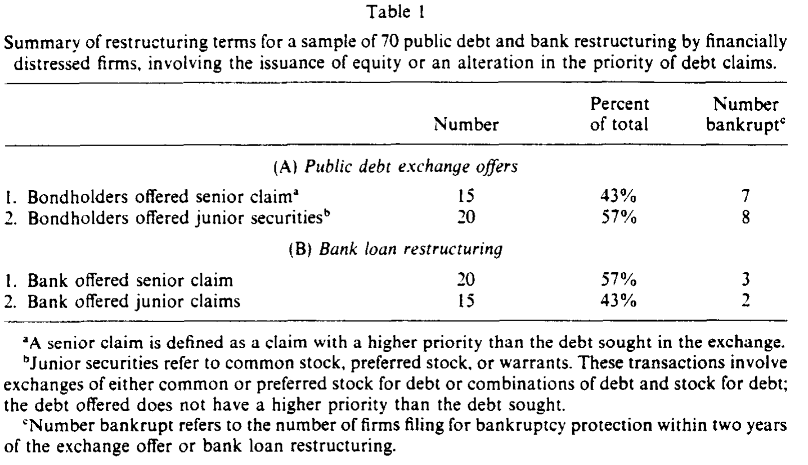
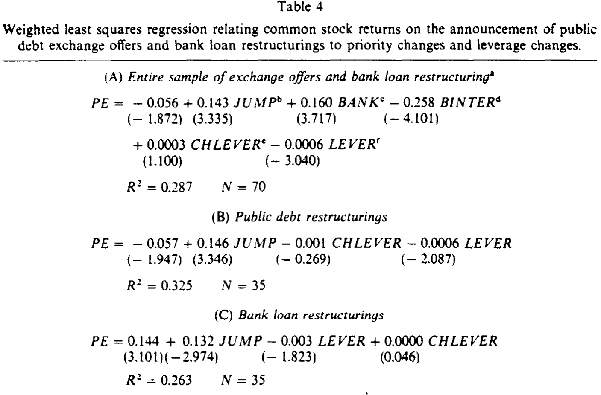
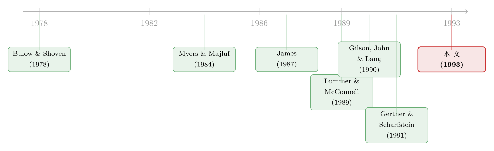

同一份股权，给银行是好消息，给散户却是坏消息
本文读的是 Brown, James & Mooradian (1993, Journal of Financial Economics)：一家深陷困境的公司在庭外重组债务时，到底把「股权」还是「优先债」递给债权人，本身就是一条信号。关键的反转在于——把股权递给消息不灵通的公募债持有人，是在主动承认「我不行了」（坏消息）；可把同样的股权递给消息灵通的银行，反而是在替公司背书「我还行」（好消息）。同一种证券，方向相反的信号，全看坐在桌子对面的是谁。
1 一个让人犯迷糊的公告
先讲个场景。一家公司错过了一次付息，离破产只有一步之遥。它召集债权人，提出一个交换要约 (exchange offer)：用新发的股票，换走你手里那张到期还不上的债。
请问，作为旁观的股东，你看到这条新闻该高兴还是该沮丧？
按 Myers and Majluf (1984) 那套人人会背的逻辑，答案似乎很清楚：公司发股权 = 坏消息。因为只有当管理层觉得自家股票被高估时，他们才舍得拿股权去换东西。所以「发股换债」，市场该跌。
可问题来了。现实里，困境公司既会跟分散的公募债 (public debt) 持有人谈，也会跟一两家银行 (private lender) 谈。如果发股权一律是坏消息，那为什么实践中，银行愿意接下股权时，股价常常是涨的？
这就是本文要拆的那个结：重组里证券的「信息含量」（information content），并不取决于发的是股还是债，而取决于这只证券递给了谁、以及它改变了谁的优先级。 围绕这一个核心，作者先搭了一个信号模型，再用 1980–1990 年 70 起困境重组把它验了一遍。
2 第一步：当对面坐的是「看不清」的公募债持有人
我们先把场景简化到极致：公司有两类债，公募债和银行债，面值都是 \(F\)。重要的设定是——公募债持有人看不清公司的真实前景，而股东（管理层）和银行看得清。
时点 1 公司清盘，现金流只有两种结局：高 \(H\) 或低 \(L\)（\(H>L\)）。世界上有两类公司，好公司 \(G\) 和坏公司 \(B\)，实现 \(H\) 的概率分别是 \(p_G\) 和 \(p_B\)，满足
$$1 > p_G > p_B > 0$$
参数还要满足一组边界条件，保证「破产有成本、但公司价值恒正」：
$$H - C > 2F > L + C > L \ge F, \qquad L - C > 0$$
这里 \(C\) 是时点 1 若债权人拒绝要约、公司被迫破产时承担的死荷成本 (deadweight cost)。
接着，一个自然的问题是：公募债持有人凭什么接受一个交换要约？答案是——只要交换给他们的东西，价值不低于他们「拒绝、把公司逼进破产」时能拿到的钱。 这个底线就是他们的保留价格 (reservation price)。在两类债同优先级的设定下，破产时高状态两家各拿满 \(F\)、低状态两家平分残值 \(L-C\)，于是：
注意 \(R(p_i)\) 随 \(p_i\) 递增：公司越好，债权人胃口越大、越不肯让步。
现在公司有两种东西可以递出去。一是股权：给公募债持有人占重组后公司比例 \(\alpha_i\) 的股票，其期望价值为
$$V(S, p_i) = \alpha_i\bigl[\,p_i H + (1-p_i)L - F\,\bigr]$$
（括号里是公司期望现金流减去仍在外的银行债 \(F\)，即留给股东的残值。）二是优先债：给一张面值 \(F_i\)、优先于一切现有债的新债，由于 \(F_i < F < L\)，它在两种状态下都能全额兑付，所以
$$V(D, p_i) = F_i$$
那么由「股东 + 银行」组成的联盟 (coalition) 自己能落下多少？发股权时，联盟留下 \((1-\alpha_i)\) 的股权再加上银行那份 \(F\)：
$$\Pi(S, p_i) = (1-\alpha_i)\bigl[\,p_i H + (1-p_i)L - F\,\bigr] + F$$
发优先债时，联盟拿走全部现金流、只付出递给公募债的 \(F_i\)：
$$\Pi(D, p_i) = p_i H + (1-p_i)L - F_i$$
但真正关键的一步在于下面这个分离均衡 (separating equilibrium)。 如果市场看不清类型、只能用混合概率 \(p = \lambda p_G + (1-\lambda)p_B\) 给公司定价，那么好公司被低估、坏公司被高估。于是：
- 坏公司 \(B\) 有动机「自曝其短」。 它发股权，靠 \(R(p_i)\) 随 \(p_i\) 递增这条性质，把公募债持有人的保留价格压下来，从而少还一点。
- 好公司 \(G\) 不会去模仿。 因为它的股权一旦和坏公司混在一起定价就被低估了，拿被低估的股权去换债是亏的；它宁可发那张「最不依赖未来状态」的证券——优先债。
把保留价格代回去定义 \(\alpha_G,\alpha_B\)（令股权价值等于对应保留价格的比例）和 \(F_G,F_B\)（令优先债价值等于对应保留价格的面值），由 \(p_G>p_B\) 立刻得到
$$F_G > F_B, \qquad \alpha_G < \alpha_B$$
激励相容由此闭合：坏公司模仿好公司要发的优先债面值 \(F_G\) 比 \(F_B\) 还高，不划算；好公司模仿坏公司要交出的股权比例 \(\alpha_B\) 比 \(\alpha_G\) 还大，也不划算。两边各自暴露真身——于是结论落地：对消息不灵通的公募债持有人，发股权是坏消息（坏公司才发），发优先债是好消息（好公司才发）。
这套逻辑骨子里就是 Myers and Majluf (1984) 的逆向选择，只是作者给「为什么有人偏偏要发被低估的股权」补上了一个动机：把坏消息主动送出去，能省下还债的钱。（关于「纯资本结构变动」到底向市场传递了什么，可参见《镜子碎了：当「加杠杆」和「去杠杆」说的根本不是同一件事》。）
3 然后，把对面换成「看得清」的银行
到这里，故事只讲了一半。那只看得清公司的银行呢？
这是全文的反转所在。既然银行本来就知道公司是好是坏，那么递给它的证券组合不会向银行传递任何新信息——信号模型在这里失灵了。作者于是换了一条思路：银行拿什么，取决于「发优先债可行不可行、划不划算」，而银行最终拿到了什么，反过来向场外那些看不清的人（其他债权人、外部股东）泄露了公司前景。
逻辑链条是这样的：
首先，如果发优先债毫无约束、毫无成本，公司永远会优先塞给银行一张优先债——因为拿股权换银行债，等于白白抬高了其他不参与重组的债权人的claim、稀释了股东。既然好坏公司都会这么做，那么「银行接优先债」就不含任何信息，股价不该有反应。
接着，一个自然的问题是：什么时候公司被迫给银行股权（而不是优先债）？答案是三种摩擦把发优先债这条路堵上了：
-
银行本就持有担保 (secured) 头寸，且公司无额外抵押可加。 此时优先级已经升无可升。如果银行还愿意豁免违约、接下股权或其他次级claim，那是毫无歧义的好消息——它等于在说「我宁可让公司活下去也不愿逼它破产，说明前景够好」。形式上，银行接受重组要求 \(p_i(H-F) + (1-p_i)L \ge K\)（\(K\) 是担保品在破产中的净值），解出来只有好公司（\(p_i\) 足够高）才满足。
-
契约限制发优先债。 Lehn and Poulsen (1990) 发现 1980 年代 56% 的公募债要约带这类限制。受保护的债权人只有在「次级化后到手的钱仍高于破产清偿」时才肯让位，而这要求公司前景足够差——因为前景越差，银行越愿意把自己的claim砍得越狠，次级化的伤害也就越小。把保留价格代入，公募债接受次级化的条件可化简为
$$L - F_i \ge \frac{L-C}{2}$$
于是在有契约限制时，银行接优先债 = 坏消息，银行接股权 = 好消息。
- 优先/担保债会抬高未来财务困境的成本。 Diamond (1991)、Gertner and Scharfstein (1991) 指出，给银行太多担保会削弱它将来再次重组的意愿、提高低效清算的概率，而且这种成本对好公司更大。结果同样是：好公司更倾向发股权，外部人把「银行接股权」读成好消息。
于是反转完成：在公募债那一侧，发股权是坏消息；在银行这一侧，发股权（接受次级化）却是好消息。同一种证券，因为对面坐的人「知道得多还是少」、因为它是升了还是降了优先级，信号彻底掉了个头。这正是 James (1987) 与 Lummer and McConnell (1989) 那条「银行比公募债持有人更懂借款人」的命题，在困境重组里照出的一面镜子。
4 数据与识别
作者用 Dow Jones Retrieval 和 S&P Corporate News，以「debt restructuring / financial restructurings / exchange offer」为关键词，捞出 1980–1990 年的困境重组，再逐条读《华尔街日报》确认确属「为补救已发生或预期违约」的困境重组。要求普通股在 Amex 或 NYSE 上市满 200 个交易日。最终样本 70 起，恰好对半：公募债交换要约 35 起，私募（银行）贷款重组 35 起。
识别上最巧的一招，是作者把所有交易按优先级是否变动重新切：
- 降低优先级：用股票/认股权证换债、并伴随本金或利息的削减，且不抬高任何剩余债权的优先级；
- 提高优先级（"priority jump"）：债权人换到一张比现有claim更优先的证券。注意是相对被换走的那张claim定义的——一个公募交换要约可能对公募债是「升级」，但相对银行债仍是同级或更低。
这套「身份 × 优先级方向」的二维分类，正是把模型预测翻译成可检验假设的关键。事件研究用 CRSP 日度收益，方法承袭 Brown and Warner (1985)。

Table 1
5 主要结果：信号真的掉了个头
实证结果与模型严丝合缝，核心是那条「公募与私募方向相反」的对照：
- 公募债交换要约：换给公募债持有人更优先的claim（priority jump），平均异常收益为正；反过来，让公募债持有人接次级claim（股权），平均异常收益显著为负。
- 私募（银行）重组：方向完全相反——当银行接下次级claim（股权），平均异常收益为正；当银行加固自己的claim（拿到担保/优先），平均异常收益为负。

Table 4
一句话：把同样的「次级化/接股权」动作，分别加在公募债持有人和银行身上，股市给出了符号相反的两种反应。 这正是模型最干净的预言——信息含量系于债权人的信息地位，而非证券的形态。这也支持了 James (1987)、Lummer and McConnell (1989) 关于「私人贷款者更知情」的判断。
6 文献脉络
把这篇论文放回它生长的那条线里，会看得更清楚。
最上游是两块奠基石：一是 Bulow and Shoven (1978) 把「破产决策」写成股东、银行与其他债权人之间的讨价还价——本文「股东-银行联盟与公募债谈判」的设定直接脱胎于此；二是 Myers and Majluf (1984) 的逆向选择，给出了「发股权为何是坏消息」的母本。
接着，是「银行到底特殊在哪」这条经验线：James (1987) 发现银行贷款公告带来正的股价反应、Lummer and McConnell (1989) 进一步区分了续贷与新贷，共同立起「私人贷款者更知情」的命题。
然后，困境重组本身成了热点：Giammarino (1989) 谈财务困境的化解、Gilson, John, and Lang (1990) 实证刻画了庭外私下重组、Gertner and Scharfstein (1991) 从理论上拆解了 workout 与重组法的效果，Diamond (1991) 则把优先级与到期结构和清算效率挂钩。
本文 (1993) 站在这两条线的交汇处：它把「银行的信息优势」和「困境重组的证券选择」焊在一个信号模型里，给出一个可证伪的反转——证券的信号方向取决于债权人身份与优先级变动。（顺着「该向银行还是向公开市场借钱」这条岔路，可参见《信用最差的公司，到底去哪儿借钱？》；关于庭外和解相对破产的取舍，可参见《破产之外的那条暗路：为什么「庭外和解」反而肯多给股东一笔钱》。）

7 评论与延伸（Q&A + 研究方向）
(a) 几个可能的疑问
Q：这跟 Myers-Majluf 到底差在哪？不都是「发股权是坏消息」吗？
差在「为什么发」。Myers-Majluf 里发股权是被动的、是高估时的套现冲动；本文里坏公司是主动发股权来把坏消息送出去，因为这能压低公募债持有人的保留价格、少还钱。更要紧的是，本文加了一个 Myers-Majluf 没有的维度——债权人的信息地位，由此推出「对知情银行，发股权反而是好消息」的反转。
Q：模型假设公募债持有人「足够集中、自认 pivotal、没有 holdout」，可现实里公募债最大的麻烦不正是 holdout 吗？
这是作者主动做的简化，目的是把焦点锁在「证券组合传递的信息」上，而非搭便车问题。作者也说明，模型的主要预测在「只有一类公募债」时依然成立。但要承认，把 holdout 抽掉，确实回避了困境重组里一个一等一的现实摩擦。
Q：「优先级是否变动」这个分类，会不会本身就和公司好坏内生相关？
会，而且这正是识别上的软肋。优先级方向不是随机分配的——好公司才发得起优先债、坏公司才肯次级化。所以股价反应里，既有「信号」也可能混着「哪类公司选了哪条路」的选择效应。模型把这层选择内生化了，但实证上很难把两者干净地分开。
Q：银行和股东「结成联盟」这个设定靠谱吗？银行难道不会和股东利益冲突？
它捕捉的是「跟一两家银行谈判，比跟一群分散债权人谈判更容易达成并分配剩余」这一现实便利。联盟内部可以做侧支付 (side payment) 来保证人人都不比破产差。但这确实假掉了银行与股东在风险转移上的潜在冲突，是个为可解性付出的代价。
Q：样本只有 70 起、且对半切成 35/35，统计功效够吗？
在 1990 年代初这是个不错的手工样本，但分到「身份 × 优先级方向」的小格子里，每格样本就很薄了。所以本文的力量更多在于符号的对照（公募与私募方向相反）这一定性事实，而非任何单一系数的精确量级。
Q：为什么银行拿担保时，「接股权」就一定是好消息，而不是银行在火中取栗？
因为模型里银行是知情且理性的：只有当 \(p_i(H-F)+(1-p_i)L \ge K\)（继续经营时股权加担保债的价值不低于破产清偿 \(K\)）时，它才肯豁免违约、接下次级claim。这个不等式只有前景够好的公司才满足，于是「银行肯接股权」本身就筛出了好公司。
(b) 几个可能的研究问题与提案
1. 用现代公司债微观数据重做这套「身份 × 优先级」检验。 - 【经济故事】1993 年只能手工读《华尔街日报》。今天有 TRACE 逐笔成交、有 DealScan 的银团贷款条款、有 Mergent FISD 的债券优先级与契约字段，可以把「谁拿了什么、优先级升还是降」精确编码，检验本文符号反转在过去 20 年是否依然成立、以及违约后市场反应是否已被更透明的信息环境抹平。 - 【可行性】中。数据齐备，难点在于把「重组事件」与「优先级方向」自动且准确地匹配，以及处理 holdout 与同时多类债权人的复杂结构。
2. 外资持有人会不会打乱这条信号？ - 【经济故事】本文的核心是「知情 vs 不知情」。若一只公司债的边际持有人是信息劣势的外资（关于外资是否真的信息劣势，可参见《外资真有「信息劣势」吗？》），那么困境重组里的证券选择应当传递更强的信号、市场反应也更剧烈。可以用各债券的外资持有比例做横截面切分。 - 【可行性】中。需要债券层面的持有人构成（如 eMAXX、各国托管数据），与重组事件匹配，识别上要小心外资比例本身的内生性。
3. 把「流动性」作为第四种摩擦加进模型。 - 【经济故事】本文列了三种逼公司给银行发股权的摩擦（担保、契约、未来困境成本）。一个自然的第四种是债券二级市场的流动性：当公募债极度缺乏流动性、持有人被迫「火线甩卖」时，他们的保留价格会被压低，从而改变最优证券选择与信号方向。 - 【可行性】中偏低。理论扩展不难，但实证上要把困境期的流动性冲击与信号效应分离，需要很干净的外生流动性变动。
4. 优先级冲突的现代版：creditor-on-creditor violence。 - 【经济故事】本文里「提高谁的优先级」是核心变量。今天的困境重组充斥着 uptiering、drop-down 等「债权人互啄」操作，本质上就是在重新分配优先级。本文框架可以用来预测：哪类优先级重排会被市场读成好/坏消息。 - 【可行性】高。这类交易近年案例丰富、条款公开，事件研究可行；难点是样本仍在积累、且每笔结构高度异质。
参考文献
- Brown, S. and J. Warner (1985). Using daily stock returns: The case of event studies. Journal of Financial Economics 14, 3–31.
- Bulow, J. and J. Shoven (1978). The bankruptcy decision. Bell Journal of Economics 9, 436–445.
- Diamond, D. (1991). Seniority and maturity structure of bank loans and publicly traded debt. Working paper, University of Chicago.
- Gertner, R. and D. Scharfstein (1991). A theory of workouts and the effects of reorganization law. Journal of Finance 46, 1189–1222.
- Giammarino, R. (1989). The resolution of financial distress. Review of Financial Studies 2, 25–47.
- Gilson, S., K. John, and L. Lang (1990). Troubled debt restructurings: An empirical study of private reorganization of firms in default. Journal of Financial Economics 27, 315–353.
- James, C. (1987). Some evidence on the uniqueness of bank loans. Journal of Financial Economics 19, 217–235.
- Lehn, K. and A. Poulsen (1990). Contractual resolution of bondholder-shareholder conflicts in leveraged buyouts. Working paper, SEC.
- Lummer, S. and J. McConnell (1989). Further evidence on the bank lending process and the capital-market response to bank loan agreements. Journal of Financial Economics 25, 99–122.
- Myers, S. and N. Majluf (1984). Corporate financing and investment decisions when firms have information that investors do not have. Journal of Financial Economics 13, 187–221.